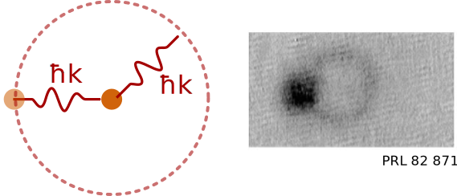
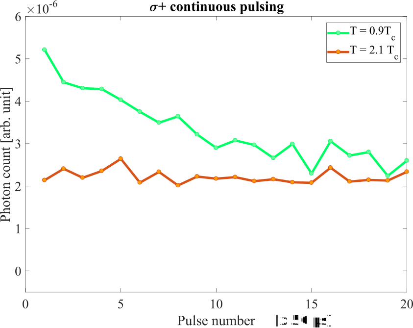

Light scattering from a quantum-degenerate Bose gas
Matthew Chilcott, Kjærgaard Lab
quantum-degenerate gas

quantum-degenerate Bose gas
quantum-degenerate Bose gas

Light scattering from quantum-degenerate Bose gas
Bose-Einstein statistics lead to enhancement.
\(C a_2^\dagger a_1 \left|\psi_1\right>\)
\( = C \sqrt{N_1(N_2 + 1)} \left|\psi_2\right>\)
\(\mathcal{P}_{1\to 2} =|C|^2 N_1(N_2 + 1) \)
Bose-Einstein statistics lead to enhancement.
Structure factor \(S(\vec{q}) = 1 + \left<n(\vec{r}, \vec{p} + \vec{q})\right>\)
Bose-Einstein statistics lead to enhancement.
\(S(\vec{q}) = 1 + \left<n(\vec{r}, \vec{p} + \vec{q})\right>\)
Bose / Fermi leads to enhancement / suppression
Structure factor \(S(\vec{q}) = 1 \pm \left<n(\vec{r}, \vec{p} + \vec{q})\right>\)
Structure factor \(S(\vec{q}) = 1 \pm \left<n(\vec{r}, \vec{p} + \vec{q})\right>\)
Off-axis scattering

\(S(\vec{q}) = 1 \pm \left<n(\vec{r}, \vec{p} + \vec{q})\right>\)
\(\kappa = \sqrt{E_\text{rec}/k_\text{B}T_\text{C}}\)
Colder clouds show enhancement
Colder clouds show enhancement
Polarisation dimishes enhancement
Polarisation dimishes enhancement
Colder clouds show enhancement, with a bump?

Colder clouds show enhancement
Dynamics: Enhancement

\begin{align*} \dot{n}_\text{therm} &= \alpha - \gamma n_\text{therm}(n_\text{BEC} + 1)\\ \dot{n}_\text{BEC} &= \gamma n_\text{therm}(n_\text{BEC} + 1) - \beta n_\text{BEC} \\ \end{align*}

Dynamics: Depletion

\begin{align*} \dot{n}_\text{therm,1} &= \alpha - \gamma n_\text{therm}(n_\text{BEC} + 1)\\ \dot{n}_\text{BEC} &= \gamma n_\text{therm}(n_\text{BEC} + 1) - \gamma n_\text{BEC}(n_\text{therm,2} + 1) - \beta n_\text{BEC} \\ \dot{n}_\text{therm,2} &= \gamma n_\text{BEC}(n_\text{therm,2}) + \alpha\\ \end{align*}

Probing Equilibrium

Probing Equilibrium
Equilibrium?
Superradiance in the final image
\(\vec{r} = \vec{r_0} + \vec{v} t\)
Time-of-flight maps velocity space to position space
Outgoing photon direction well defined?
Superradience

Superradience

Phase-space behavior
Phase-space behavior
Phase-space interaction
\begin{align*} \dot{n}_\text{therm,1} &= \alpha - \gamma n_\text{therm,1}(n_\text{BEC,1} + 1)\\ \dot{n}_\text{therm,2} &= \alpha - \gamma n_\text{therm,2}(n_\text{BEC,2} + 1)\\ \dot{n}_\text{BEC,1} &= \gamma n_\text{therm,1}(n_\text{BEC,1} + 1) - \gamma n_\text{BEC,1}(n_\text{BEC,2}) \\ \dot{n}_\text{BEC,2} &= \gamma n_\text{therm,2}(n_\text{BEC,2} + 1) + \gamma n_\text{BEC,1}(n_\text{BEC,2}) \\ \end{align*}
Light pulse during free-fall
Colder clouds show enhancement,
and also dynamics.